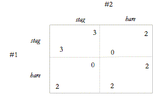

Существует также еще один вид сомнений, который естественно ведет к третьему крупному движению в теории игр и этике. Контрактуалисты, такие как Готье, понимают фундаментальные нормы, которые управляют нами, исходя из гипотетической ситуации выбора, в которой было бы очень много агентов, вступающих в переговоры по разным принципам или социальным соглашениям. Тем не менее, открыт вопрос, является ли это подходящим способом моделирования процесса рационального выбора, который приводит к появлению морали.
В способе которым теория игр была применена к этике заключается ключевое отличие третьего подхода. Этот третий путь - эволюционная теория игр. Вместо того, чтобы рассматривать мораль как предполагаемый результат сложного крупномасштабного переговорного процесса между полностью информированными и полностью рациональными агентами, эволюционный подход уходит от всех этих предположений. Во-первых, мораль рассматривается как непреднамеренный побочный эффект взаимодействия агентов. Во-вторых, мораль возникает из ряда повторяющихся взаимодействий между небольшими группами агентов (большинство моделей имеют дело только с двумя людьми). Чтобы выразить это в терминах функционализма: мораль - это не решение одной проблемы, а часто повторяющиеся проблемы. В-третьих, вместо того, чтобы предполагать полную информацию и полную рациональность, теория эволюционной игры делает менее требовательные предположения о когнитивных и совещательных навыках агентов. Это может привести к принципиально иным результатам.
Мы можем проиллюстрировать это следующим образом. Руссо описывает состояние природы как нечто похожее на так называемую Оленьи Охоты (Rousseau 1964, p. 166–167). (См. Skyrms 2004 для современной трактовки этой игры.) Представьте двух охотников, которые могут охотиться за зайцем. Их шансы поймать зайца не зависят от действий других. Однако оба предпочитают оленину, но если они будут охотиться на оленя, они будут успешными только в том случае, если каждый выполнит свою часть работы.

Предположим, что координаты #1 и #2 (Hare, Hare) т.е. оба охотника поймали зайца. Это равновесие по Парето менее оптимальное чем добыча оленя (Stag, Stag). В то время как выбор по контракту предполагает, что (Stag, Stag) является правильной нормой, на которую стоит остановиться, теория эволюционной игры учит нас, что маловероятно, чтобы равновесие по Парето было выбрано в процессе повторяющихся взаимодействий. Более того, равновесие по Парето нестабильно: случайные отклонения от этого равновесия приведут к тому, что население в целом будет координировать (зайца, зайца), а не (оленя, оленя).
Предположительно это относится к некоторым нашим фактическим нормам - социальным, юридическим или моральным. Они могут быть несовершенными по сравнению с другими нормами, особенно теми, которые выходят из рода идеализированных ситуаций социального выбора в договорной моральной теории. Однако большинство наших фактических норм зачастую стабильны, и неясно, есть ли у нас основания отходить от них. Поэтому нам остается задаться вопросом, являются ли нормы, выявленные теоретическими теориями ведения переговоров, нормами, приемлемыми для большинства обществ, сообществ и групп. Поскольку «должен» означает «может», у нас есть основания сомневаться в том, что подход, основанный на контрактах, дает нам правильное описание морали, которой мы должны следовать.
До сих пор главным результатом эволюционного подхода является «восстановление» многих существующих моральных интуиций и норм. Таким образом, теоретики эволюционной игры, пишущие об этике (а также моральные философы, использующие эволюционную теорию игр), показали, что среди не вполне рационализированных агентов могут возникать многие нормы координации и сотрудничества, являющиеся объектом исследования более традиционных моральных теорий. (Skyrms, 1996). Кроме того, Skyrms (1996) и другие продемонстрировали, что в противном случае корыстные агенты будут развивать рассудочную эвристику, такую как Золотое правило (поступайте с другими так, как вы хотите быть ) И версию «максимизации ограничения» Готье при соответствующих обстоятельствах. То есть, они показывают, что эволюция способствует не только появлению моделей поведения, соответствующих моральным стандартам, но и развитию когнитивной эвристики, которая обладает всеми характеристиками морального мышления.